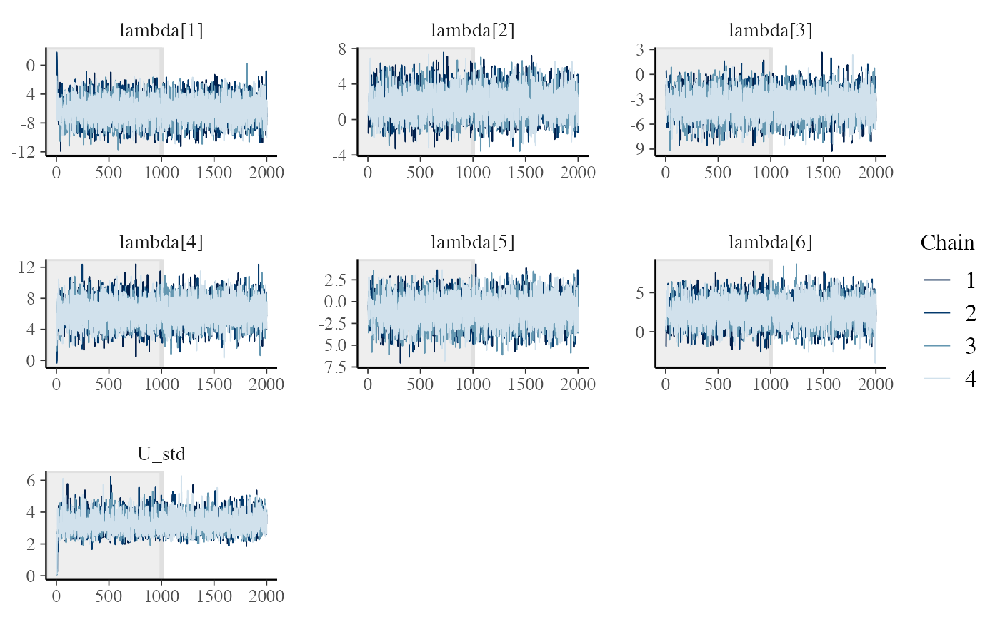
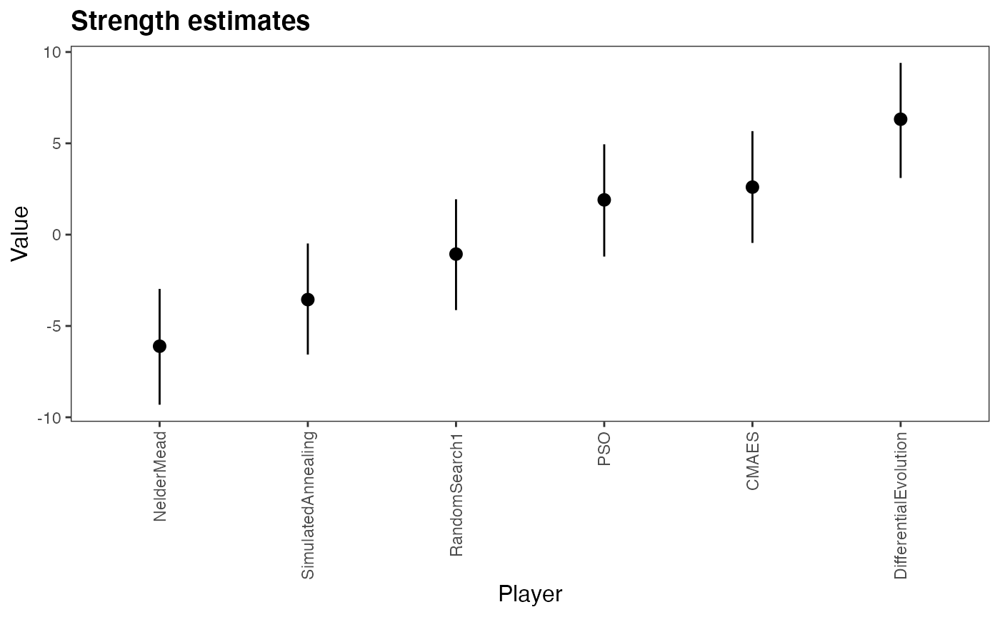

Random effects in the Bradley-Terry model
Source:vignettes/c_bt_random_effects.Rmd
c_bt_random_effects.RmdIntroduction
In this vignette, we will go over an example of analyzing optimization algorithms based on benchmark functions. A extended analysis of this example including the experimental conditions for the data collection is discussed in “Statistical Models for the Analysis of Optimization Algorithms with Benchmark Functions”
In the development of optimization algorithms it is common to use benchmark functions/problems to show:
- The algorithm works on a number of the artificial problems
- Compare how different algorithms perform in the same set of benchmark problems that have a known solution.
In the comparison part, researchers usually select a small number of benchmark problems (something like 20-30) and run their algorithms and the algorithms they are comparing several times for the same benchmark (something like 10 times each algorithm in each benchmark). At the end, they compare how close the algorithms approached the solution and rank them.
Almost always, this comparison is done with non-parametric tests statistics and often fail to compute the intra-class correlation of the repeated-measures, or average the repeated measures (throwing out the uncertainty of the results) before running the tests.
Why use ranks and not the output directly?
Each benchmark function has a different search space and the algorithms converge quite differently from one function to the other. While the difference between the minimum and the algorithm output is limited to zero (when they solve the problem), the difference can range from 0.1 to 100 depending on the benchmark problem. To use this value would require either transformations such as normalizing for each benchmark. However, if we want only to rank the algorithms and provide a classification between them, the Bradley-Terry model is ideal. The differences in range of each benchmark function is already taken care of when computing who wins and who looses.
In this example, we will show how to use the Bradley-Terry model to compensate the dependent data of the repeated measures and rank the algorithms. Our Bradley-Terry ranking of the abilities also shows the uncertainty of the ranks and the probabilities of one algorithm beating the other in any of the benchmarks.
The data
First let’s load some packages
library(bpcs)
library(dplyr)
library(tidyr)
library(ggplot2)
library(kableExtra)
library(knitr)
library(gtools)
library(bayesplot)The collected data is available as:
data("optimization_algorithms")
knitr::kable(dplyr::sample_n(optimization_algorithms, size = 20),
caption = "Sample of the data set")| Algorithm | Benchmark | TrueRewardDifference | Ndimensions | MaxFevalPerDimensions | simNumber |
|---|---|---|---|---|---|
| RandomSearch1 | QingN2 | 4.161400e-03 | 2 | 1e+05 | 5 |
| DifferentialEvolution | PinterN6 | 0.000000e+00 | 6 | 1e+05 | 0 |
| SimulatedAnnealing | RosenbrockRotatedN6 | 1.992435e+05 | 6 | 1e+05 | 4 |
| SimulatedAnnealing | Price1 | 1.499000e-04 | 2 | 1e+05 | 9 |
| CMAES | Schwefel2d20N2 | 0.000000e+00 | 2 | 1e+05 | 4 |
| SimulatedAnnealing | ChungReynoldsN2 | 8.235080e+05 | 2 | 1e+05 | 9 |
| PSO | Mishra7N6 | 4.000000e-07 | 6 | 1e+05 | 5 |
| NelderMead | Schwefel2d4N6 | 2.748618e+03 | 6 | 1e+05 | 4 |
| PSO | Schwefel2d23N6 | 0.000000e+00 | 6 | 1e+05 | 4 |
| DifferentialEvolution | LunacekBiRastriginN6 | 1.309000e+01 | 6 | 1e+05 | 8 |
| CMAES | LunacekBiRastriginN6 | 9.827520e+00 | 6 | 1e+05 | 3 |
| PSO | Tripod | 2.000882e+00 | 2 | 1e+05 | 0 |
| NelderMead | RosenbrockRotatedN6 | 2.346520e+05 | 6 | 1e+05 | 1 |
| NelderMead | BentCigarN6 | 1.065036e+07 | 6 | 1e+05 | 3 |
| DifferentialEvolution | ChenBird | 1.000004e+03 | 2 | 1e+05 | 6 |
| CMAES | Schwefel2d26N6 | 7.106300e+02 | 6 | 1e+05 | 7 |
| DifferentialEvolution | Schwefel2d23N6 | 0.000000e+00 | 6 | 1e+05 | 2 |
| CMAES | XinSheYang2N2 | 7.577817e-01 | 2 | 1e+05 | 3 |
| PSO | Shubert | 4.370000e-05 | 2 | 1e+05 | 2 |
| NelderMead | SalomonN2 | 4.001022e+00 | 2 | 1e+05 | 4 |
In this dataset, we have one main metrics that we can use to compare the algorithms. The TrueRewardDifference is the difference between the minimum found by the algorithm and the global minimum of the benchmark function. simNumber indicates the number of the replication of the same algorithm in the same benchmark function (but with different seeds). All algorithms had a budget of 10,000 function evaluations per number of dimensions for each benchmark function.
Here we have the following benchmark functions:
bm <- unique(optimization_algorithms$Benchmark)
nbm <- length(bm)
knitr::kable(matrix(bm, ncol = 4))
#> Warning in matrix(bm, ncol = 4): data length [30] is not a sub-multiple or
#> multiple of the number of rows [8]| BentCigarN6 | LunacekBiRastriginN6 | Schwefel2d21N6 | Trefethen |
| ChenBird | Mishra7N6 | Schwefel2d23N6 | Trigonometric1N6 |
| ChenV | PinterN6 | Schwefel2d26N6 | Tripod |
| ChungReynoldsN2 | Price1 | Schwefel2d4N6 | WhitleyN6 |
| Damavandi | QingN2 | Shubert | XinSheYang2N2 |
| DiscusN2 | RosenbrockRotatedN6 | SphereN6 | ZakharovN2 |
| ExponentialN2 | SalomonN2 | StrechedVSineWave2N | BentCigarN6 |
| Giunta | Schwefel2d20N2 | ThreeHumpCamelBack | ChenBird |
To reduce a bit the model sampling time here lets reduce the number of benchmark functions and only use 10 of them.
set.seed(1)
bm_reduced <- sample(size = 10, x = bm, replace = F)
optimization_algorithms <- optimization_algorithms %>%
dplyr::filter(Benchmark %in% bm_reduced)
knitr::kable(matrix(bm_reduced, ncol = 2))| Trefethen | StrechedVSineWave2N |
| ChungReynoldsN2 | PinterN6 |
| ExponentialN2 | RosenbrockRotatedN6 |
| BentCigarN6 | Schwefel2d23N6 |
| ChenBird | Schwefel2d26N6 |
Here we have the optimization algorithms:
| x |
|---|
| NelderMead |
| PSO |
| SimulatedAnnealing |
| DifferentialEvolution |
| RandomSearch1 |
| CMAES |
Preparing the data
To analyze this data we first need to convert it to a paired comparison. We will do it in the following way:
- First we group and rank the algorithms for each benchmark function in each simNumber. If there are ties (not very likely in this case) we will solve them randomly
- We expand this dataset into a wide format in the ranks. Each new column will contain the rank of the algorithms
- We expand this wide format to a long format with each of the paired comparisons.
To compute all the paired combinations between the algorithms we will use the gtools::comb function
comb <- gtools::combinations(n=nalg, r=2, v=seq(1:nalg), repeats.allowed = F)Creating the dataset
#1 Grouping and ranking
df_1 <-
optimization_algorithms %>% dplyr::group_by(Benchmark, simNumber) %>%
dplyr::mutate(rankReward = rank(TrueRewardDifference, ties.method = 'random')) %>%
dplyr::ungroup() %>%
dplyr::select(-TrueRewardDifference)
#2 Expanding in wide format
df_2 <- df_1 %>%
tidyr::pivot_wider(names_from = Algorithm,
values_from = rankReward) %>%
dplyr::select(-MaxFevalPerDimensions,-Ndimensions) #dropping some variables that we will not use
#3 Computing the paired comparisons
## Maybe not the most efficient code, but for this number of variables it is fast enough, only a few seconds...
#We first go row by row of the wide data frame df_2 and expand each row into the number of combinations
#available of the different ranks
df_3 <-
dplyr::tribble( ~ algo0_name, ~ algo1_name, ~ y, ~ simNumber, ~ Benchmark)
for (i in 1:nrow(df_2))
{
current_row <- df_2[i, ]
for (j in 1:nrow(comb)) {
comb_row <- comb[j, ]
algo0_name <- alg[comb_row[1]]
algo0 <- comb_row[1]
algo0_rank <- current_row[[1, algo0_name]]
algo1_name <- alg[comb_row[2]]
algo1 <- comb_row[2]
algo1_rank <- current_row[[1, algo1_name]]
diff_rank <- algo1_rank - algo0_rank
y <-
ifelse(diff_rank < 0, 1, 0) # if rank0 is higher than rank1, algo1 wins
df_3 <- tibble::add_row(
df_3,
algo0_name = algo0_name,
algo1_name = algo1_name,
y = y,
simNumber = current_row$simNumber,
Benchmark = current_row$Benchmark
)
}
}
df_3 <- as.data.frame(df_3)The table below shows how the dataset looks like now.
dplyr::sample_n(df_3,size = 20)
#> algo0_name algo1_name y simNumber Benchmark
#> 1 DifferentialEvolution CMAES 1 7 BentCigarN6
#> 2 RandomSearch1 CMAES 1 2 ExponentialN2
#> 3 NelderMead RandomSearch1 1 7 BentCigarN6
#> 4 PSO CMAES 1 4 ExponentialN2
#> 5 DifferentialEvolution CMAES 1 5 ExponentialN2
#> 6 NelderMead DifferentialEvolution 1 0 RosenbrockRotatedN6
#> 7 NelderMead PSO 1 4 RosenbrockRotatedN6
#> 8 NelderMead DifferentialEvolution 1 6 ChungReynoldsN2
#> 9 NelderMead DifferentialEvolution 1 3 PinterN6
#> 10 RandomSearch1 CMAES 0 3 Schwefel2d26N6
#> 11 RandomSearch1 CMAES 1 2 BentCigarN6
#> 12 NelderMead SimulatedAnnealing 0 0 Schwefel2d23N6
#> 13 PSO DifferentialEvolution 1 7 BentCigarN6
#> 14 NelderMead PSO 1 0 Schwefel2d26N6
#> 15 SimulatedAnnealing DifferentialEvolution 1 2 Schwefel2d23N6
#> 16 SimulatedAnnealing CMAES 1 4 ChenBird
#> 17 SimulatedAnnealing RandomSearch1 1 7 ChenBird
#> 18 PSO RandomSearch1 0 0 ChenBird
#> 19 PSO CMAES 1 8 BentCigarN6
#> 20 PSO CMAES 1 1 RosenbrockRotatedN6The model
To compensate for the repeated measures model we will use the random effects model. The model can be written as:
For the benchmark \(k\) we have: \[P[i \text{ beats } j | U_k]= \dfrac{exp(\lambda_i + U_{i,k})}{exp(\lambda_i + U_{i,k}) + exp(\lambda_j + U_{j,k})}\]
\[\lambda \sim \text{Normal}(0,3.0)\] \[U \sim \text{Normal}(0,3.0)\]
Now we can estimate and control the effect of each benchmark in each algorithm when we estimate the ability parameter. This model will estimate the parameters \(\lambda\) and \(U\) of the model. Note that the model with many parameters and data points might take a few minutes to sample.
Lets also specify a wide prior for the standard deviation of the random effects. This will help the convergence
m <-
bpc(
data = df_3,
player0 = 'algo0_name',
player1 = 'algo1_name',
result_column = 'y',
cluster = 'Benchmark',
model_type = 'bt-U',
priors = list(prior_U1_std = 10.0)
)
#> Running MCMC with 4 parallel chains...
#>
#> Chain 1 finished in 523.3 seconds.
#> Chain 3 finished in 547.4 seconds.
#> Chain 4 finished in 547.8 seconds.
#> Chain 2 finished in 562.3 seconds.
#>
#> All 4 chains finished successfully.
#> Mean chain execution time: 545.2 seconds.
#> Total execution time: 562.5 seconds.Diagnostics
First let’s look at the MCMC convergence with the traceplots and look at the Rhat and neff
get_parameters_df(m, n_eff = T, Rhat = T)
#> Parameter Mean Median
#> 1 lambda[NelderMead] -6.10810972 -6.12350500
#> 2 lambda[PSO] 1.90441804 1.89784500
#> 3 lambda[SimulatedAnnealing] -3.55592226 -3.55070500
#> 4 lambda[DifferentialEvolution] 6.32010385 6.30835000
#> 5 lambda[RandomSearch1] -1.06321251 -1.08614000
#> 6 lambda[CMAES] 2.60299353 2.57542000
#> 7 U1[NelderMead,BentCigarN6] -1.00758874 -0.98139350
#> 8 U1[PSO,BentCigarN6] -0.07753904 -0.08200790
#> 9 U1[SimulatedAnnealing,BentCigarN6] -0.27600814 -0.27076950
#> 10 U1[DifferentialEvolution,BentCigarN6] -0.27008696 -0.26894600
#> 11 U1[RandomSearch1,BentCigarN6] -0.37172490 -0.36906700
#> 12 U1[CMAES,BentCigarN6] 1.98923669 1.97657000
#> 13 U1[NelderMead,ChenBird] 0.15165166 0.15543150
#> 14 U1[PSO,ChenBird] -0.18351594 -0.19157850
#> 15 U1[SimulatedAnnealing,ChenBird] -0.94637713 -0.94557550
#> 16 U1[DifferentialEvolution,ChenBird] -0.33725296 -0.34428800
#> 17 U1[RandomSearch1,ChenBird] -0.55481582 -0.55026600
#> 18 U1[CMAES,ChenBird] 1.93082862 1.91112000
#> 19 U1[NelderMead,ChungReynoldsN2] -0.31749361 -0.30858850
#> 20 U1[PSO,ChungReynoldsN2] 0.07453414 0.06466390
#> 21 U1[SimulatedAnnealing,ChungReynoldsN2] -0.96540562 -0.96101050
#> 22 U1[DifferentialEvolution,ChungReynoldsN2] 0.94343669 0.91907050
#> 23 U1[RandomSearch1,ChungReynoldsN2] -0.25571713 -0.24913200
#> 24 U1[CMAES,ChungReynoldsN2] 0.52904367 0.53480150
#> 25 U1[NelderMead,ExponentialN2] -0.66141727 -0.62704750
#> 26 U1[PSO,ExponentialN2] -0.04723910 -0.04996835
#> 27 U1[SimulatedAnnealing,ExponentialN2] 0.38188001 0.37733900
#> 28 U1[DifferentialEvolution,ExponentialN2] -0.39059440 -0.38545950
#> 29 U1[RandomSearch1,ExponentialN2] -0.05669672 -0.05196185
#> 30 U1[CMAES,ExponentialN2] 0.80567842 0.79661900
#> 31 U1[NelderMead,PinterN6] 0.15593465 0.16700100
#> 32 U1[PSO,PinterN6] 0.08552279 0.08313760
#> 33 U1[SimulatedAnnealing,PinterN6] 0.52786695 0.52568350
#> 34 U1[DifferentialEvolution,PinterN6] 0.58833364 0.54973600
#> 35 U1[RandomSearch1,PinterN6] 0.06078388 0.06025335
#> 36 U1[CMAES,PinterN6] -1.40808557 -1.40093500
#> 37 U1[NelderMead,RosenbrockRotatedN6] -0.37853226 -0.36856000
#> 38 U1[PSO,RosenbrockRotatedN6] 0.17055384 0.16737150
#> 39 U1[SimulatedAnnealing,RosenbrockRotatedN6] -0.35664793 -0.34720250
#> 40 U1[DifferentialEvolution,RosenbrockRotatedN6] 0.13451722 0.13433350
#> 41 U1[RandomSearch1,RosenbrockRotatedN6] -0.35692088 -0.34738750
#> 42 U1[CMAES,RosenbrockRotatedN6] 0.75279310 0.74384000
#> 43 U1[NelderMead,Schwefel2d23N6] -0.11225531 -0.11109950
#> 44 U1[PSO,Schwefel2d23N6] -0.10121956 -0.09974590
#> 45 U1[SimulatedAnnealing,Schwefel2d23N6] -1.33004846 -1.32729000
#> 46 U1[DifferentialEvolution,Schwefel2d23N6] 1.09996531 1.07526500
#> 47 U1[RandomSearch1,Schwefel2d23N6] -0.33655185 -0.33647000
#> 48 U1[CMAES,Schwefel2d23N6] 0.81540015 0.81484200
#> 49 U1[NelderMead,Schwefel2d26N6] 0.77222373 0.76481850
#> 50 U1[PSO,Schwefel2d26N6] -0.95513714 -0.95481500
#> 51 U1[SimulatedAnnealing,Schwefel2d26N6] 0.04467586 0.04283875
#> 52 U1[DifferentialEvolution,Schwefel2d26N6] -0.28249294 -0.28819600
#> 53 U1[RandomSearch1,Schwefel2d26N6] 1.05542501 1.04452000
#> 54 U1[CMAES,Schwefel2d26N6] -0.67916286 -0.68133000
#> 55 U1[NelderMead,StrechedVSineWave2N] -0.14393381 -0.14626450
#> 56 U1[PSO,StrechedVSineWave2N] 0.65333062 0.64341450
#> 57 U1[SimulatedAnnealing,StrechedVSineWave2N] 0.73342395 0.72676400
#> 58 U1[DifferentialEvolution,StrechedVSineWave2N] 0.87519950 0.84686800
#> 59 U1[RandomSearch1,StrechedVSineWave2N] 0.22209742 0.21388650
#> 60 U1[CMAES,StrechedVSineWave2N] -2.33926506 -2.33498500
#> 61 U1[NelderMead,Trefethen] -0.65145296 -0.61850000
#> 62 U1[PSO,Trefethen] 1.11266440 1.11640000
#> 63 U1[SimulatedAnnealing,Trefethen] 0.87042565 0.86282700
#> 64 U1[DifferentialEvolution,Trefethen] -0.09594043 -0.10590850
#> 65 U1[RandomSearch1,Trefethen] 0.25820381 0.26490650
#> 66 U1[CMAES,Trefethen] -1.49136053 -1.48878000
#> 67 U1_std 3.28660341 3.21802500
#> HPD_lower HPD_higher Rhat n_eff
#> 1 -9.3110700 -2.9710400 1.0005725 6821.374
#> 2 -1.1995800 4.9463900 1.0000993 6455.356
#> 3 -6.5660400 -0.4842180 1.0002045 6467.955
#> 4 3.1029200 9.4034400 1.0001347 7157.360
#> 5 -4.1313800 1.9371600 1.0006373 6270.268
#> 6 -0.4521180 5.6673800 1.0010239 6794.128
#> 7 -2.4406900 0.3706760 0.9998148 9698.617
#> 8 -1.2316000 1.0643300 1.0007114 8403.410
#> 9 -1.4196600 0.8820330 1.0007885 8174.885
#> 10 -1.5007900 0.9407810 1.0004509 8974.361
#> 11 -1.5763800 0.7027340 1.0011797 7922.995
#> 12 0.6749780 3.3008400 1.0000144 9050.014
#> 13 -1.0046100 1.2793800 1.0000673 7915.790
#> 14 -1.3693100 0.9577270 1.0003712 8345.716
#> 15 -2.1006700 0.2139620 1.0002113 7978.366
#> 16 -1.4966100 0.8993270 1.0000700 8701.685
#> 17 -1.7103400 0.5362900 1.0005577 7973.549
#> 18 0.6492880 3.2622800 0.9999664 9303.027
#> 19 -1.5302600 0.9153230 0.9999381 8745.584
#> 20 -1.0695700 1.1922900 0.9997942 8324.338
#> 21 -2.1377200 0.2630240 0.9999526 8380.859
#> 22 -0.4556840 2.3838600 1.0007169 9767.449
#> 23 -1.3998800 0.8974950 1.0002376 7848.858
#> 24 -0.6018150 1.6984700 1.0002769 8397.106
#> 25 -2.1350000 0.8019950 1.0002552 9818.144
#> 26 -1.0848800 1.0374300 1.0005263 6910.262
#> 27 -0.7307690 1.4534500 0.9999030 7138.350
#> 28 -1.4874800 0.7690870 1.0002960 7998.985
#> 29 -1.0818400 1.0632800 1.0007975 6927.226
#> 30 -0.3434110 1.8840400 1.0004869 7746.557
#> 31 -0.9723120 1.3357100 1.0004429 7496.983
#> 32 -0.9915230 1.1837200 0.9998469 7210.009
#> 33 -0.5495750 1.5805300 1.0008016 6808.141
#> 34 -0.8542200 2.1618000 1.0001861 11777.173
#> 35 -0.9667000 1.1104400 0.9998172 6833.898
#> 36 -2.5371500 -0.3323380 1.0004118 5944.353
#> 37 -1.5962600 0.8530750 1.0004843 7939.168
#> 38 -1.0129400 1.2802500 0.9999306 7668.227
#> 39 -1.5021300 0.7532060 1.0002357 7631.714
#> 40 -1.0220400 1.3057600 0.9997702 8557.073
#> 41 -1.4560400 0.7753630 1.0005107 7036.037
#> 42 -0.3904240 1.9401000 0.9999901 7905.054
#> 43 -1.3007800 1.1277800 0.9998953 8330.293
#> 44 -1.2230900 1.0699600 1.0005909 8411.075
#> 45 -2.5077200 -0.0853162 0.9997411 8346.163
#> 46 -0.3225130 2.4944800 0.9997868 9806.307
#> 47 -1.5008000 0.8008400 1.0003560 7905.685
#> 48 -0.3759100 2.0022300 1.0003487 8905.615
#> 49 -0.3082910 1.8328800 0.9999938 6991.279
#> 50 -1.9576800 0.1559700 1.0010134 6673.592
#> 51 -1.0236600 1.0608600 1.0000341 7059.253
#> 52 -1.4883700 0.8827520 1.0001052 8229.758
#> 53 0.0290641 2.1566500 1.0005150 5992.387
#> 54 -1.7180500 0.3363720 1.0007509 7041.859
#> 55 -1.3240200 0.9932460 1.0000484 7570.478
#> 56 -0.5481430 1.8615400 0.9997139 9000.714
#> 57 -0.3426310 1.8987600 1.0004424 7054.839
#> 58 -0.5639240 2.2952400 1.0003260 9014.604
#> 59 -0.8253850 1.3523200 0.9999066 7215.760
#> 60 -3.5605000 -1.1143100 1.0009720 6763.606
#> 61 -2.1487000 0.8386380 1.0002914 9458.216
#> 62 -0.1298920 2.2861600 1.0004977 8703.871
#> 63 -0.2439750 1.9468900 1.0010050 7251.878
#> 64 -1.3400200 1.1089600 1.0008127 9532.709
#> 65 -0.9087470 1.2620600 0.9997933 7778.580
#> 66 -2.6059100 -0.3805550 1.0002368 7424.306
#> 67 2.2476200 4.4012900 1.0004090 3496.077All seems ok! Let’s look now at the traceplots
Traceplots of the chains with the bayesplot library
fit <- get_fit(m)
posterior_draws <- posterior::as_draws_matrix(fit$draws())
bayesplot::mcmc_trace(
posterior_draws,
pars = c(
"lambda[1]",
"lambda[2]",
"lambda[3]",
"lambda[4]",
"lambda[5]",
"lambda[6]",
"U1_std"
),
n_warmup = 1000
)
Everything seems in order for us to look at the predictive posterior bar plot.
y_pp <- posterior_predictive(m)
y <- y_pp$y
yrep <- y_pp$y_pred
bayesplot::ppc_bars(y = df_3$y, yrep = yrep) +
labs(title = 'Bar plot with medians and uncertainty\n intervals superimposed')
This sounds ok. So let’s investigate the actual parameters and the probabilities of the models
Summary parameters
In the console, we can use the summary function. It gives the parameters estimates with HPDI, the probability table for every condition of players and benchmarks and we also have a rank estimate.
summary(m)
#> Estimated baseline parameters with 95% HPD intervals:
#>
#> Table: Parameters estimates
#>
#> Parameter Mean Median HPD_lower HPD_higher
#> ---------------------------------------------- ------ ------- ---------- -----------
#> lambda[NelderMead] -6.11 -6.12 -9.31 -2.97
#> lambda[PSO] 1.90 1.90 -1.20 4.95
#> lambda[SimulatedAnnealing] -3.56 -3.55 -6.57 -0.48
#> lambda[DifferentialEvolution] 6.32 6.31 3.10 9.40
#> lambda[RandomSearch1] -1.06 -1.09 -4.13 1.94
#> lambda[CMAES] 2.60 2.58 -0.45 5.67
#> U1[NelderMead,BentCigarN6] -1.01 -0.98 -2.44 0.37
#> U1[PSO,BentCigarN6] -0.08 -0.08 -1.23 1.06
#> U1[SimulatedAnnealing,BentCigarN6] -0.28 -0.27 -1.42 0.88
#> U1[DifferentialEvolution,BentCigarN6] -0.27 -0.27 -1.50 0.94
#> U1[RandomSearch1,BentCigarN6] -0.37 -0.37 -1.58 0.70
#> U1[CMAES,BentCigarN6] 1.99 1.98 0.67 3.30
#> U1[NelderMead,ChenBird] 0.15 0.16 -1.00 1.28
#> U1[PSO,ChenBird] -0.18 -0.19 -1.37 0.96
#> U1[SimulatedAnnealing,ChenBird] -0.95 -0.95 -2.10 0.21
#> U1[DifferentialEvolution,ChenBird] -0.34 -0.34 -1.50 0.90
#> U1[RandomSearch1,ChenBird] -0.55 -0.55 -1.71 0.54
#> U1[CMAES,ChenBird] 1.93 1.91 0.65 3.26
#> U1[NelderMead,ChungReynoldsN2] -0.32 -0.31 -1.53 0.92
#> U1[PSO,ChungReynoldsN2] 0.07 0.06 -1.07 1.19
#> U1[SimulatedAnnealing,ChungReynoldsN2] -0.97 -0.96 -2.14 0.26
#> U1[DifferentialEvolution,ChungReynoldsN2] 0.94 0.92 -0.46 2.38
#> U1[RandomSearch1,ChungReynoldsN2] -0.26 -0.25 -1.40 0.90
#> U1[CMAES,ChungReynoldsN2] 0.53 0.53 -0.60 1.70
#> U1[NelderMead,ExponentialN2] -0.66 -0.63 -2.13 0.80
#> U1[PSO,ExponentialN2] -0.05 -0.05 -1.08 1.04
#> U1[SimulatedAnnealing,ExponentialN2] 0.38 0.38 -0.73 1.45
#> U1[DifferentialEvolution,ExponentialN2] -0.39 -0.39 -1.49 0.77
#> U1[RandomSearch1,ExponentialN2] -0.06 -0.05 -1.08 1.06
#> U1[CMAES,ExponentialN2] 0.81 0.80 -0.34 1.88
#> U1[NelderMead,PinterN6] 0.16 0.17 -0.97 1.34
#> U1[PSO,PinterN6] 0.09 0.08 -0.99 1.18
#> U1[SimulatedAnnealing,PinterN6] 0.53 0.53 -0.55 1.58
#> U1[DifferentialEvolution,PinterN6] 0.59 0.55 -0.85 2.16
#> U1[RandomSearch1,PinterN6] 0.06 0.06 -0.97 1.11
#> U1[CMAES,PinterN6] -1.41 -1.40 -2.54 -0.33
#> U1[NelderMead,RosenbrockRotatedN6] -0.38 -0.37 -1.60 0.85
#> U1[PSO,RosenbrockRotatedN6] 0.17 0.17 -1.01 1.28
#> U1[SimulatedAnnealing,RosenbrockRotatedN6] -0.36 -0.35 -1.50 0.75
#> U1[DifferentialEvolution,RosenbrockRotatedN6] 0.13 0.13 -1.02 1.31
#> U1[RandomSearch1,RosenbrockRotatedN6] -0.36 -0.35 -1.46 0.78
#> U1[CMAES,RosenbrockRotatedN6] 0.75 0.74 -0.39 1.94
#> U1[NelderMead,Schwefel2d23N6] -0.11 -0.11 -1.30 1.13
#> U1[PSO,Schwefel2d23N6] -0.10 -0.10 -1.22 1.07
#> U1[SimulatedAnnealing,Schwefel2d23N6] -1.33 -1.33 -2.51 -0.09
#> U1[DifferentialEvolution,Schwefel2d23N6] 1.10 1.08 -0.32 2.49
#> U1[RandomSearch1,Schwefel2d23N6] -0.34 -0.34 -1.50 0.80
#> U1[CMAES,Schwefel2d23N6] 0.82 0.81 -0.38 2.00
#> U1[NelderMead,Schwefel2d26N6] 0.77 0.76 -0.31 1.83
#> U1[PSO,Schwefel2d26N6] -0.96 -0.95 -1.96 0.16
#> U1[SimulatedAnnealing,Schwefel2d26N6] 0.04 0.04 -1.02 1.06
#> U1[DifferentialEvolution,Schwefel2d26N6] -0.28 -0.29 -1.49 0.88
#> U1[RandomSearch1,Schwefel2d26N6] 1.06 1.04 0.03 2.16
#> U1[CMAES,Schwefel2d26N6] -0.68 -0.68 -1.72 0.34
#> U1[NelderMead,StrechedVSineWave2N] -0.14 -0.15 -1.32 0.99
#> U1[PSO,StrechedVSineWave2N] 0.65 0.64 -0.55 1.86
#> U1[SimulatedAnnealing,StrechedVSineWave2N] 0.73 0.73 -0.34 1.90
#> U1[DifferentialEvolution,StrechedVSineWave2N] 0.88 0.85 -0.56 2.30
#> U1[RandomSearch1,StrechedVSineWave2N] 0.22 0.21 -0.83 1.35
#> U1[CMAES,StrechedVSineWave2N] -2.34 -2.33 -3.56 -1.11
#> U1[NelderMead,Trefethen] -0.65 -0.62 -2.15 0.84
#> U1[PSO,Trefethen] 1.11 1.12 -0.13 2.29
#> U1[SimulatedAnnealing,Trefethen] 0.87 0.86 -0.24 1.95
#> U1[DifferentialEvolution,Trefethen] -0.10 -0.11 -1.34 1.11
#> U1[RandomSearch1,Trefethen] 0.26 0.26 -0.91 1.26
#> U1[CMAES,Trefethen] -1.49 -1.49 -2.61 -0.38
#> U1_std 3.29 3.22 2.25 4.40
#> NOTES:
#> * A higher lambda indicates a higher team ability
#> * The U_std indicates the standard deviation of the normal distribution where the parameters U[player, cluster] are drawn from. Higher values of U_std indicates a higher effect of the cluster in the team abitilies.
#> * The U[player, cluster] represents the effect of a particular cluster in a particular team ability.
#>
#> Rank of the players' abilities:
#> The rank is based on the posterior rank distribution of the lambda parameter
#>
#> Table: Estimated posterior ranks
#>
#> Parameter MedianRank MeanRank StdRank
#> ---------------------- ----------- --------- --------
#> DifferentialEvolution 1 1.01 0.09
#> CMAES 2 2.33 0.49
#> PSO 3 2.68 0.51
#> RandomSearch1 4 4.03 0.27
#> SimulatedAnnealing 5 5.00 0.30
#> NelderMead 6 5.96 0.21Of course we can get these estimates in nicer tables with kable that allows a greater deal of customization
get_parameters_table(m, format = 'html')| Parameter | Mean | Median | HPD_lower | HPD_higher |
|---|---|---|---|---|
| lambda[NelderMead] | -6.108 | -6.124 | -9.311 | -2.971 |
| lambda[PSO] | 1.904 | 1.898 | -1.200 | 4.946 |
| lambda[SimulatedAnnealing] | -3.556 | -3.551 | -6.566 | -0.484 |
| lambda[DifferentialEvolution] | 6.320 | 6.308 | 3.103 | 9.403 |
| lambda[RandomSearch1] | -1.063 | -1.086 | -4.131 | 1.937 |
| lambda[CMAES] | 2.603 | 2.575 | -0.452 | 5.667 |
| U1[NelderMead,BentCigarN6] | -1.008 | -0.981 | -2.441 | 0.371 |
| U1[PSO,BentCigarN6] | -0.078 | -0.082 | -1.232 | 1.064 |
| U1[SimulatedAnnealing,BentCigarN6] | -0.276 | -0.271 | -1.420 | 0.882 |
| U1[DifferentialEvolution,BentCigarN6] | -0.270 | -0.269 | -1.501 | 0.941 |
| U1[RandomSearch1,BentCigarN6] | -0.372 | -0.369 | -1.576 | 0.703 |
| U1[CMAES,BentCigarN6] | 1.989 | 1.977 | 0.675 | 3.301 |
| U1[NelderMead,ChenBird] | 0.152 | 0.155 | -1.005 | 1.279 |
| U1[PSO,ChenBird] | -0.184 | -0.192 | -1.369 | 0.958 |
| U1[SimulatedAnnealing,ChenBird] | -0.946 | -0.946 | -2.101 | 0.214 |
| U1[DifferentialEvolution,ChenBird] | -0.337 | -0.344 | -1.497 | 0.899 |
| U1[RandomSearch1,ChenBird] | -0.555 | -0.550 | -1.710 | 0.536 |
| U1[CMAES,ChenBird] | 1.931 | 1.911 | 0.649 | 3.262 |
| U1[NelderMead,ChungReynoldsN2] | -0.317 | -0.309 | -1.530 | 0.915 |
| U1[PSO,ChungReynoldsN2] | 0.075 | 0.065 | -1.070 | 1.192 |
| U1[SimulatedAnnealing,ChungReynoldsN2] | -0.965 | -0.961 | -2.138 | 0.263 |
| U1[DifferentialEvolution,ChungReynoldsN2] | 0.943 | 0.919 | -0.456 | 2.384 |
| U1[RandomSearch1,ChungReynoldsN2] | -0.256 | -0.249 | -1.400 | 0.897 |
| U1[CMAES,ChungReynoldsN2] | 0.529 | 0.535 | -0.602 | 1.698 |
| U1[NelderMead,ExponentialN2] | -0.661 | -0.627 | -2.135 | 0.802 |
| U1[PSO,ExponentialN2] | -0.047 | -0.050 | -1.085 | 1.037 |
| U1[SimulatedAnnealing,ExponentialN2] | 0.382 | 0.377 | -0.731 | 1.453 |
| U1[DifferentialEvolution,ExponentialN2] | -0.391 | -0.385 | -1.487 | 0.769 |
| U1[RandomSearch1,ExponentialN2] | -0.057 | -0.052 | -1.082 | 1.063 |
| U1[CMAES,ExponentialN2] | 0.806 | 0.797 | -0.343 | 1.884 |
| U1[NelderMead,PinterN6] | 0.156 | 0.167 | -0.972 | 1.336 |
| U1[PSO,PinterN6] | 0.086 | 0.083 | -0.992 | 1.184 |
| U1[SimulatedAnnealing,PinterN6] | 0.528 | 0.526 | -0.550 | 1.581 |
| U1[DifferentialEvolution,PinterN6] | 0.588 | 0.550 | -0.854 | 2.162 |
| U1[RandomSearch1,PinterN6] | 0.061 | 0.060 | -0.967 | 1.110 |
| U1[CMAES,PinterN6] | -1.408 | -1.401 | -2.537 | -0.332 |
| U1[NelderMead,RosenbrockRotatedN6] | -0.379 | -0.369 | -1.596 | 0.853 |
| U1[PSO,RosenbrockRotatedN6] | 0.171 | 0.167 | -1.013 | 1.280 |
| U1[SimulatedAnnealing,RosenbrockRotatedN6] | -0.357 | -0.347 | -1.502 | 0.753 |
| U1[DifferentialEvolution,RosenbrockRotatedN6] | 0.135 | 0.134 | -1.022 | 1.306 |
| U1[RandomSearch1,RosenbrockRotatedN6] | -0.357 | -0.347 | -1.456 | 0.775 |
| U1[CMAES,RosenbrockRotatedN6] | 0.753 | 0.744 | -0.390 | 1.940 |
| U1[NelderMead,Schwefel2d23N6] | -0.112 | -0.111 | -1.301 | 1.128 |
| U1[PSO,Schwefel2d23N6] | -0.101 | -0.100 | -1.223 | 1.070 |
| U1[SimulatedAnnealing,Schwefel2d23N6] | -1.330 | -1.327 | -2.508 | -0.085 |
| U1[DifferentialEvolution,Schwefel2d23N6] | 1.100 | 1.075 | -0.323 | 2.494 |
| U1[RandomSearch1,Schwefel2d23N6] | -0.337 | -0.336 | -1.501 | 0.801 |
| U1[CMAES,Schwefel2d23N6] | 0.815 | 0.815 | -0.376 | 2.002 |
| U1[NelderMead,Schwefel2d26N6] | 0.772 | 0.765 | -0.308 | 1.833 |
| U1[PSO,Schwefel2d26N6] | -0.955 | -0.955 | -1.958 | 0.156 |
| U1[SimulatedAnnealing,Schwefel2d26N6] | 0.045 | 0.043 | -1.024 | 1.061 |
| U1[DifferentialEvolution,Schwefel2d26N6] | -0.282 | -0.288 | -1.488 | 0.883 |
| U1[RandomSearch1,Schwefel2d26N6] | 1.055 | 1.045 | 0.029 | 2.157 |
| U1[CMAES,Schwefel2d26N6] | -0.679 | -0.681 | -1.718 | 0.336 |
| U1[NelderMead,StrechedVSineWave2N] | -0.144 | -0.146 | -1.324 | 0.993 |
| U1[PSO,StrechedVSineWave2N] | 0.653 | 0.643 | -0.548 | 1.862 |
| U1[SimulatedAnnealing,StrechedVSineWave2N] | 0.733 | 0.727 | -0.343 | 1.899 |
| U1[DifferentialEvolution,StrechedVSineWave2N] | 0.875 | 0.847 | -0.564 | 2.295 |
| U1[RandomSearch1,StrechedVSineWave2N] | 0.222 | 0.214 | -0.825 | 1.352 |
| U1[CMAES,StrechedVSineWave2N] | -2.339 | -2.335 | -3.561 | -1.114 |
| U1[NelderMead,Trefethen] | -0.651 | -0.619 | -2.149 | 0.839 |
| U1[PSO,Trefethen] | 1.113 | 1.116 | -0.130 | 2.286 |
| U1[SimulatedAnnealing,Trefethen] | 0.870 | 0.863 | -0.244 | 1.947 |
| U1[DifferentialEvolution,Trefethen] | -0.096 | -0.106 | -1.340 | 1.109 |
| U1[RandomSearch1,Trefethen] | 0.258 | 0.265 | -0.909 | 1.262 |
| U1[CMAES,Trefethen] | -1.491 | -1.489 | -2.606 | -0.381 |
| U1_std | 3.287 | 3.218 | 2.248 | 4.401 |
get_rank_of_players_table(m, format='html')| Parameter | MedianRank | MeanRank | StdRank |
|---|---|---|---|
| DifferentialEvolution | 1 | 1.010 | 0.109 |
| CMAES | 2 | 2.294 | 0.473 |
| PSO | 3 | 2.732 | 0.510 |
| RandomSearch1 | 4 | 4.010 | 0.303 |
| SimulatedAnnealing | 5 | 4.998 | 0.300 |
| NelderMead | 6 | 5.956 | 0.205 |
Plot the HPD intervals
plot(m,rotate_x_labels = T)
We can see that the Differential Evolution Performs better than the others. While the PSO and the CMA-ES algorithm have relatively similar abilities.
From the high value of the \(U1_{std}\) we can see that the choice of benchmarks greatly have a large variance and a big influence in the results and that some algorithms have a better performance in some benchmarks than others. E.g. the Trefethen function is a difficult problem to solve and the U estimate there seems to reduce the ability of the best algorithms while increasing the ability of the worst ones, acting as a regularizing parameter there.